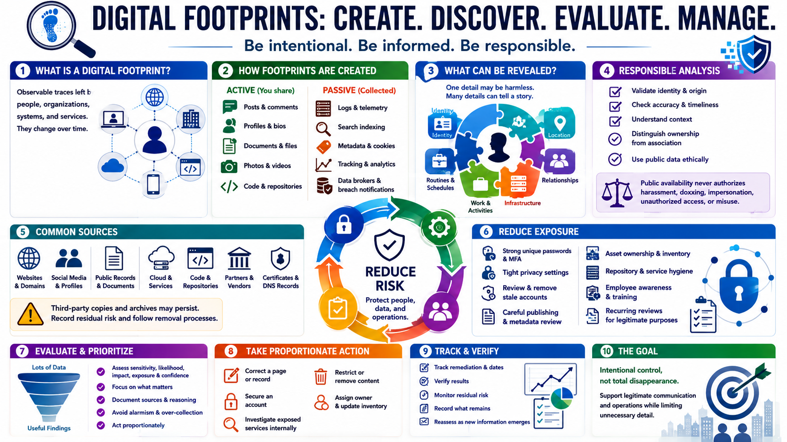

Course Summary and Key Takeaways
Connecting to LMS... Progress: in progress

Narration
Digital footprints are observable traces created through active sharing, passive collection, public records, technical infrastructure, and third-party references. They can be personal, professional, organizational, or technical, and they change over time.
Active footprints include posts, profiles, documents, and code intentionally published. Passive footprints include logs, indexing, metadata, tracking, data-broker records, and reported service exposure. One item may be low risk while aggregation reveals sensitive relationships, routines, or infrastructure.
Responsible analysis validates identity, origin, accuracy, timeliness, and context. It distinguishes ownership from association and current conditions from historical records. Public availability never authorizes harassment, doxxing, impersonation, unauthorized access, or misuse of personal information.
Risk reduction combines account security, privacy settings, careful publishing, metadata review, asset ownership, repository and service hygiene, employee awareness, and recurring monitoring for legitimate defensive purposes.
The objective is intentional control, not total disappearance. A well-managed footprint supports useful public communication and accountable operations while limiting unnecessary detail. Ethical analysis uses proportionality and evidence to reduce privacy and security risk without exploiting the people represented by the data.